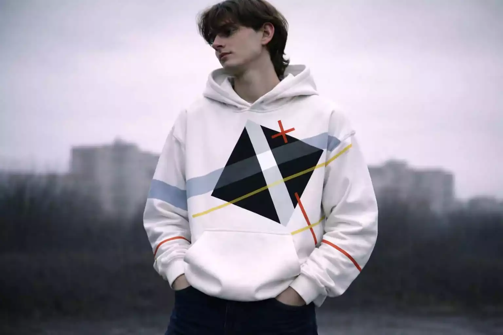
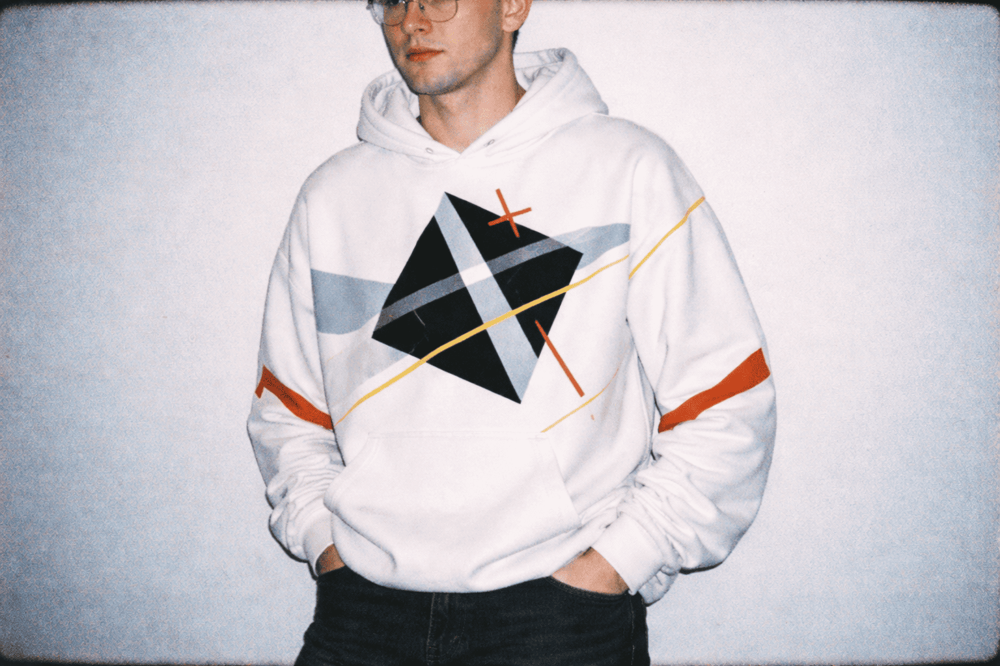
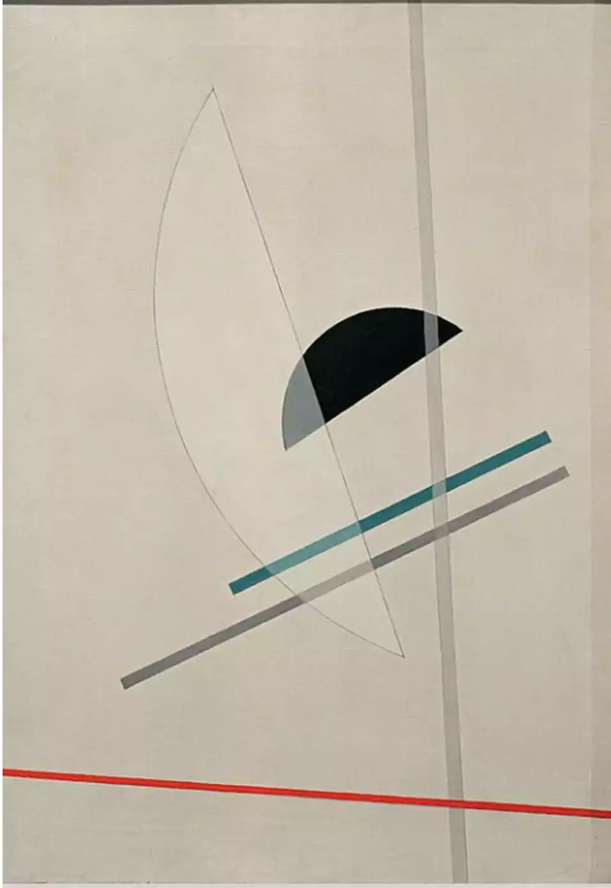
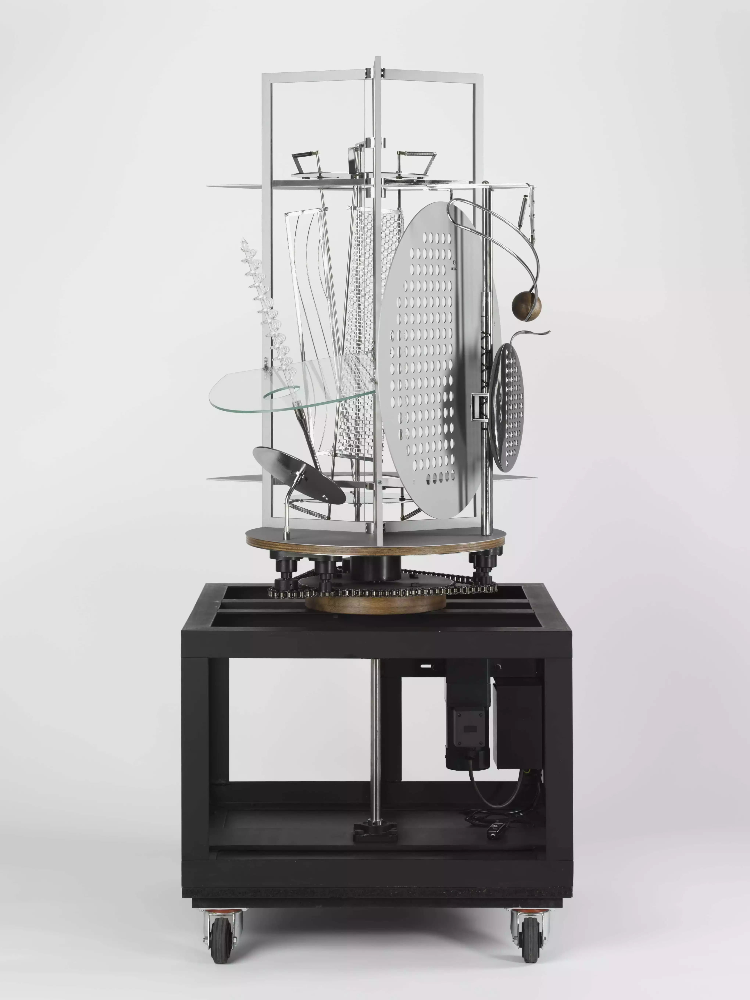
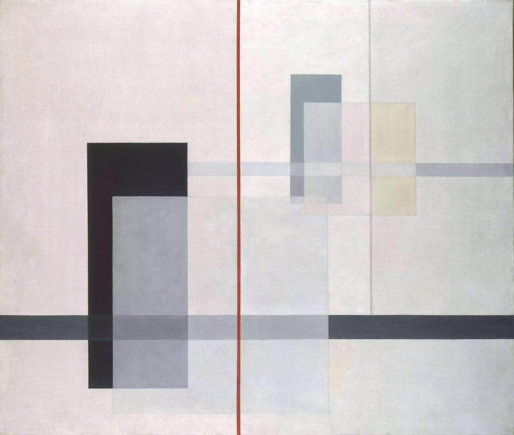
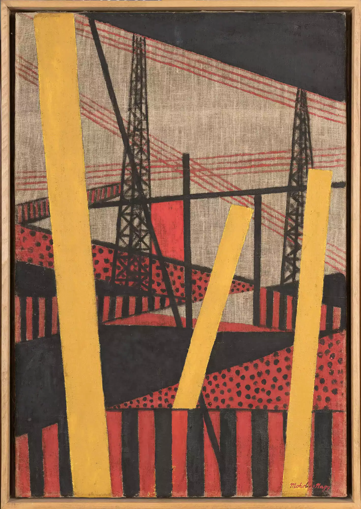

Oversized
65 €
Vinko
Un sweatshirt à capuche inspiré de la rigueur géométrique du constructivisme. Chaque bande est un trait, chaque angle une composition. Personnalisez le vôtre.

Vinko naît d'une contemplation attentive de l'oeuvre d'un artiste hongrois, Laszlo Moholy-Nagy. Le Zerkalo — miroir en russe — reflète cette tension entre la rigueur mathématique des formes et la liberté de les réinterpréter. Dans un monde où les couleurs se meurent, nous proposons un vêtement qui les fait revivre, qui invite à jouer avec les teintes et les formes d'une oeuvre mythique, Ki (1922).
Le produit — Trois coupes
65 €

55 €
50 €
La collection Zerkalo puise dans l'œuvre de Laszlo Moholy-Nagy, pionnier du Bauhaus. Ses compositions de lignes, cercles et plans de couleur deviennent ici un langage vestimentaire. Une géométrie portée, vivante.
En savoir plusExplorez la galerie des œuvres de Laszlo Moholy-Nagy, source d'inspiration directe du sweatshirt Zerkalo.

Composition, 1923
Space Modulator, 1940
K VII, 1922
Large Railway, 1920